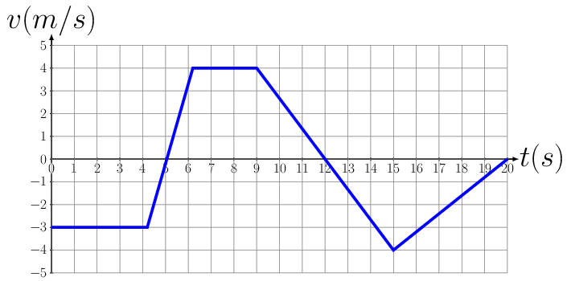

Given the \(v \thicksim t\) curve as shown below, produce \(x \thicksim t\) and \(a \thicksim t\) graphs.

2.
A ball is rolled up an inclined plane and returns to its starting point at the bottom of the plane in 4 s. If the ball travels a total distance up the plane of 1.5 m, what was
its initial speed and
acceleration?
Express the acceleration in units of g?
3.
During an air show, a jet aircraft passes the spectators who see the lights of its afterburners ignited 4 seconds later. One second after that, they hear the blast from the ignition. If the speed of sound is 345 m/s,
how fast was the jet traveling before turning on its afterburners?
If the jet accelerates with the afterburners at a constant \(2 \,g's\text{,}\) how long (after igniting the afterburners) will it take for the jet to break the sound barrier?
4.
A car traveling at a constant speed of 10 m/s passes a policeman who is at rest and unseen. The car continues on a distance of 50 meters and then runs a red light. If it takes an additional 5 seconds for the policeman to start his motorcycle in order to pursue the law breaker and if he accelerates at a rate of one-quarter g,
how long after starting out does it take for the policeman to overtake the car?
How far does the policeman travel before overtaking the car?
How fast will the policeman be moving when he gets to the car ?
5.
A man has a row boat which he can row at a steady speed of 3 kmh in calm water traveling on the average a distance of 2 m with every stroke of the oars. He decides to use the boat to cross a river 100 m wide flowing at 1 kmh and traveling straight to a point 200 m up stream of his starting point.
How long will it take him to reach his destination?
How many strokes will he have to make in order to get to his destination ?
6.
A river is flowing due east with a speed \(3 \,m/s.\) A swimmer can swim in still water at a speed of \(4 \,m/s\text{.}\)
If swimmer, starts swimming due north, what will be his resultant velocity?
If he wants to start from point A on south bank and reach opposite point B on north bank,
which direction should he swim ?
what will be his resultant speed ?
7.
The engine of a boat drives it across a river that is 1800 m wide. The velocity \(v_{bw}\) of the boat relative to the water is 4.0 m/s, directed perpendicular to the current. The velocity \(v_{ws}\) of the water relative to the shore is 2.0 m/s.
What is the velocity \(v_{bs}\) of the boat relative to the shore?
How long does it take for the boat to cross the river?
8.
A bucket is left out in the rain. The rain is coming down at 5 m/s. If a crosswind starts to blow at 2 m/s, will the bucket fill faster or slower?
9.
A train is traveling relative to the ground at 15 m/s and car is traveling relative to the train is 20 m/s, find the velocity of car with respect to ground. If the car were traveling to left with velocity of 20m/s with respect to train. Find \(v_{cg}\text{?}\)
10.
The car is traveling at 48 km/h when the traffic light 90 m ahead turns yellow. The driver takes 1 s to react before he applies the accelerator. If the car has a constant acceleration of \(2\, m/s^{2}\) and the light remains yellow for 5 s, will the car reach the light before it turns red? How fast is the car moving when it reaches the light?
11.
The rocket starts from rest at t = 0 and travels straight up. Its height above the ground as a function of time can be approximated by \(s = bt^{2}+ ct^{3}\text{,}\) where b and c are constants. At \(t = 10 s\text{,}\) the rocket’s velocity and acceleration are \(v = 229\, m/s\) and \(a = 28.2 \,m/s^{2}\text{.}\) Determine the time at which the rocket reaches supersonic speed (325 m/s) and the altitude at that time.
12.
The boat is moving at 10 m/s when its engine is shut down. Due to hydrodynamic drag, its subsequent acceleration is \(a = -0.05v^{2} \,m/s^{2}\text{,}\) where v is the velocity of the boat in m/s. What is the boat’s velocity 4 s after the engine is shut down?
13.
A stone is thrown vertically upward from a bridge 30.0 m high at an initial velocity of 15.0 m/s. How long will it take for the stone to hit the water below?
14.
A block slides down a smooth inclined plane that makes an angle of \(25^{o}\) with the horizontal. Find the acceleration of the block. If the plane is 10.0 meters long and the block starts from rest, what is its velocity at the bottom of the plane? How long does it take for the block to get to the bottom?
At the instant that the traffic light turns green, a car starting from rest with an acceleration of \(2.50 \,m/s^{2}\) is passed by a truck moving at a constant velocity of 60.0 km/hr.
How long will it take for the car to overtake the truck?
How far from the starting point will the car overtake the truck?
At what velocity will the car be moving when it overtakes the truck?
16.
A person goes to 15 m at \(60^{o}\) north east and then goes to 30 m at \(30^{o} \) south of west. What is his displacement?
2D Kinematics.
17.
A boy uses a sling to throw a rock a distance of 100 m. If the rock is in the air for 5 s, find each of the following:
How fast is the rock initially traveling horizontally?
How fast is the rock initially traveling vertically?
How high does the rock get?
How fast does it hit the ground?
At what angle does it hit the ground?
18.
A hang glider is flying in a horizontal circle of radius 20 m, completing the circle in a time period of 10 s.
What is the speed of the glider?
What is the tangential acceleration of the glider?
What is the radial acceleration of the glider?
Express this last answer in g’s of acceleration.
How many g’s of force would the pilot be experiencing? Would this be noticeable?
19.
A boy uses a sling to throw a rock across the field by whirling the rock in a vertical circle of radius 0.5 m and frequency 2 Hz. If the rock is released when the sling makes an angle of \(30^{o}\) below the horizontal when the rock is at a height of 1 m above the ground,
how high will the rock rise above the ground and
how far will it travel horizontally before hitting the ground?
20.
A fighter plane is flying horizontally at an altitude of 1.5 km with speed 720 km/h. At what angle of sight (w.r.t. horizontal) when the target is seen, should the pilot drop the bomb in order to attack the target ?
21.
If the golf ball is hit in the direction of a \(12 \,m\) tree which is \(80 \,m\) from the golfer, will the ball pass over the tree or hit it?
22.
Suppose a tennis player hits a ball when it is at a height of 1.5 m giving it a velocity of 15 m/s at an angle of \(10^{o}\) to the horizontal. Find when and where the ball will hit the ground.
23.
A footballer kicks a ball on horizontal ground giving it an initial velocity of 25 m/s at an angle of \(35^{o}\) to the horizontal.
Where will the ball be 1.2 seconds after it is kicked?
What will be the greatest height reached by the ball?
Where will the ball land?
24.
A ball is kicked at an angle \(\theta = 45^{o}\text{.}\) It is intended that the ball lands in the back of a moving truck which has a trunk of length L = 2.5 m. If the initial horizontal distance from the back of the truck to the ball, at the instant of the kick, is \(d_{o} = 5 \,m\text{,}\) and the truck moves directly away from the ball at velocity \(v = 9 \,m/s\) (as shown), what is the maximum and minimum velocity \(v_{o}\) so that the ball lands in the trunk. Assume that the initial height of the ball is equal to the height of the ball at the instant it begins to enter the trunk.
25.
An athlete releases the shot at 1.82 m above the ground and its initial velocity is \(v_{o} =
13.6 \,m/s\text{.}\) Determine the horizontal distance the shot travels from the point of release to the point where it hits the ground.
26.
A pilot wants to drop survey markers at remote locations. If he flies at a constant velocity \(v_{o} = 40 \,m/s\) at altitude \(h = 30 \,m\) and the marker is released with zero velocity relative to the plane, at what horizontal distance \(d\) from the desired impact point should the marker be released?